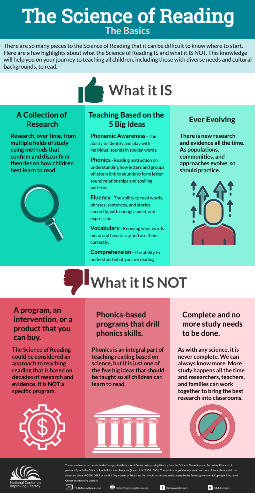

According to Amplify, the science of reading is "refers to the pedagogy and practices proven by extensive research to effectively teach children how to read. To easily understand the complex combination of skills that result in reading fluency, you need two main frameworks: The Simple View of Reading and Scarborough’s Rope."

National Center on Improving Literacy (2022). The Science of Reading: The Basics. Washington, DC: U.S. Department of Education,
Office of Elementary and Secondary Education, Office of Special Education Programs, National Center on Improving Literacy. Retrieved from http://improvingliteracy.org.
The science of reading research has been around for decades but it hasn't come to the forefront of education until much more recently. Elementary educators are now required to take an in depth professional development program, LETRS, to learn the best ways to teach children how to read. Reading ability directly relates to high school success. It is important for educators to be well versed in this research to close reading gaps and help students succeed in their literacy knowledge development.